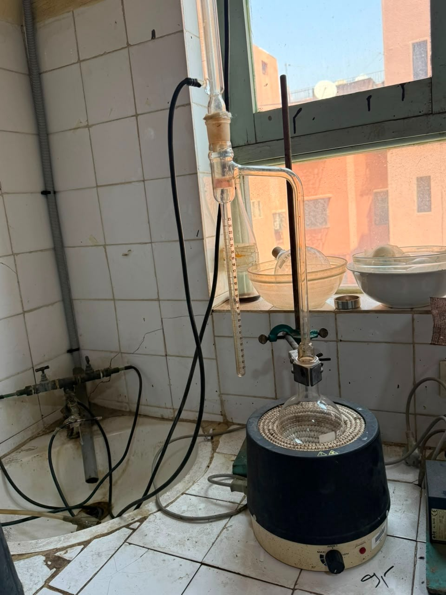
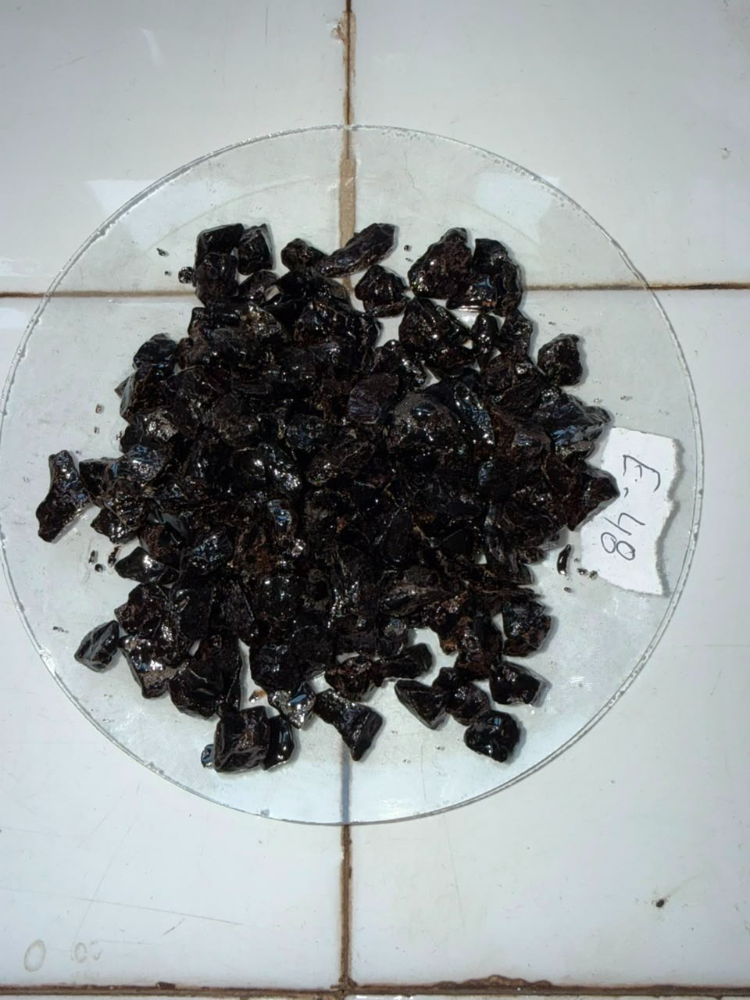
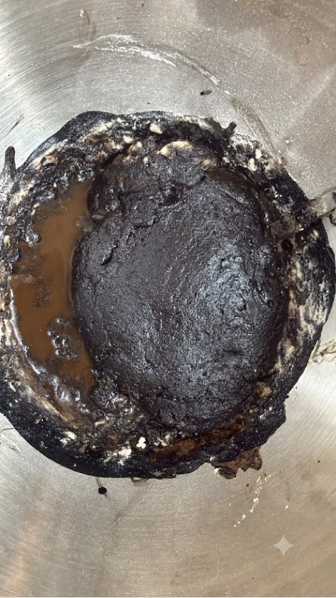
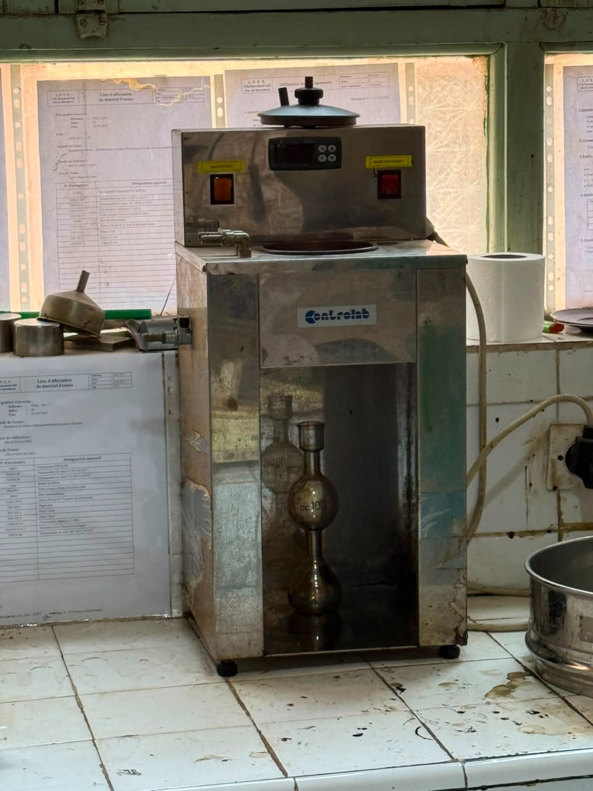
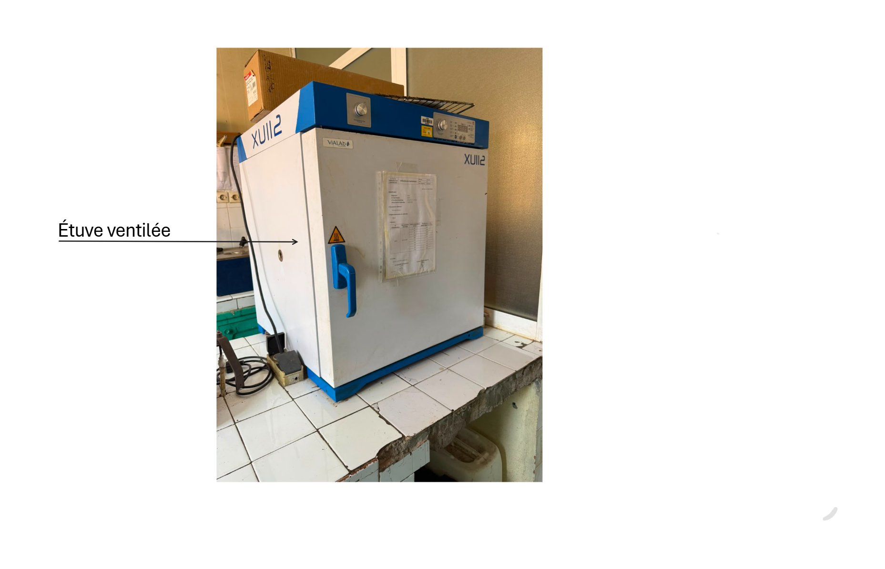

Les essais réalisés :
Détermination de la teneur en eau dans les émulsions de bitume :
Principe
L'eau présente dans l'émulsion de bitume est extraite par distillation à reflux à l'aide d'un solvant d'entraînement liquide non miscible à l'eau. Après condensation, le solvant et l'eau se séparent en continu dans un tube de recette gradué : l'eau s'accumule dans la partie graduée pour permettre la lecture directe de son volume, tandis que le solvant condensé retourne dans le ballon.
Appareillage :
- Chauffage à reflux.
- Réfrigérant.
- Ballon.
- Balance.
- Task ou Grains de pierre ponce.
- Émulsion de bitume.
- Xyléne.
Mode opératoire :
- Verser de 100 ml à 200 ml de xyléne dans le ballon.
- Ajouter envrion 5 g de task ou grains de pierre ponce.
- Ajouter 50 g d'émulsion de bitume.
- Réaliser le montage de distillation en posant le ballon sur le chauffage à reflux,
et installer le réfrigérant tout en ajoutant un coton hydrophile à son extrémité. - Régler le chauffage à reflux afin d'obtenir 2 jusqu'à 5 gouttes par seconde.
Remarques :
-Avant de commencer, vérifier que l'appareillage est bien sec et propre,
et que la température du laboratoire est 23°C ± 5°C.
-On a utiliser 40 g d'émulsion afin d'obtenir de 15 ml jusqu'à 20 ml d'eau.
-À la présence d'eau au niveau du tube réfrigérant, on utulisera un fil en acier inoxidable.
Calcul de la teneur en eau :
W=(Mw/Me) x 100
Mw=Volume d'eau distillé du produit d'essai en ml.
Me=Masse d'émulsion employée en g.

Montage de distillation utilisé.
Détermination de la polarité des particules des émulsions de bitume :
Principe
L'essai repose sur le passage d'un courant continu ou redressé à travers une émulsion de bitume placée entre deux électrodes à plaques parallèles. La polarité des particules est déterminée par le lieu de dépôt du bitume : un dépôt sur l'anode indique des particules chargées négativement (émulsion anionique), tandis qu'un dépôt sur la cathode révèle des particules chargées positivement (émulsion cationique).
Appareillage :
- Circuit électrique.
- Source de courant capable de fournir 8 mA sous une tension de 4,5 V à 15 V pendant 30 min.
- Milliampèremètre d'échelle de 10 mA.
- Électrodes.
- Bécher en verre.
- Tige de (12 ± 2) mm de largeur.
- Dispositif de chronométrage.
Mode opératoire :
- Nettoyer avec de l'eau.
- Nettoyer avec du propan-2-ol ou de l'éthanol ou de l'alcool dénaturé.
- Nettoyer avec les liquides de rinçage ou le xyléne.
- Nettoyer avec du propan-2-ol ou de l'éthanol.
- Nettoyer avec de l'eau.
- On sépare les électrodes par la tige et on les pose dans un bécher.
- Verser une quantité d'émulsion de bitume jusqu'à que les electrodes soient imergées dans ce dernier.
- Lier les électrodes à la source de courant continue d'intensité de courant est égale à 8 mA.
- Attendre jusqu'à affichage de 2 mA, si cela prend beaucoup de temps, on s'arrête à 30 min.
- Examiner sle dépôt de liant bitumineux sur les électrodes.
Préparation des électrodes :
Essai :
Intérprétation :
-À la présence d'une couche de importante de liant sur l'électrode négative, alors on a une polarité postive, d'ou l'émulsion est cationique.
-À la présence d'une couche de importante de liant sur l'électrode positive, alors on a une polarité négative, d'ou l'émulsion est anionique.
Photos du laboratoire :
.png)
Détermination de l'adhésivité des émulsions de bitume par l'essai d'immersion dans l'eau :
Principe
L'émulsion de bitume est mélangée soigneusement au granulat sélectionné dans des conditions spécifiées. Pour évaluer l'adhésivité immédiate, le mélange est lavé sous l'eau courante et le pourcentage de surface recouverte de liant est estimé visuellement. Pour déterminer l'effet de l'eau sur l'adhésivité, le mélange est d'abord mûri puis immergé dans l'eau avant de procéder à la même évaluation visuelle de l'enrobage du granulat de référence.
Appareillage :
- Étuve ventilée.
- 2 capsules résistant à la chaleur, de 15 cm à 20 cm de diamètre.
- Chronomètre.
- Bécher.
- Balance.
- Éprouvette.
- Émulsuion de bitume.
- Granulat de référence.
Mode opératoire :
- Peser 100 g de granulats.
- Tamisage du granulats à l'aide d'un tamis de 14mm, puis d'un tamis de 10 mm.
- Laver le granulats avec de l'eau.
- Sécher le granulat dans l'étuve ventilée à (110 ± 5)°C pendant 2 heures.
Préparation du granulat de référence :
- Poser la masse de granulat dans une capsule et (150 ± 5)g d'émulsion dans une autre capsule
- Verser le graulat dans la capsule d'émulsion et les laisser en contact pendant (60 ± 5)s
- Se débarasser de l'excès d'émulsion, puis laver avec de l'eau à température ambiante jusqu'à ce que l'eau soit claire.
- Placer le granulat dans un bécher et recouvrui avec environ 300 ml d'eau à température ambiante.
- Mettre un couvercle sur le bécher.
Essai :
(Ne pas agiter, par contre secouer doucement afin de disperser toutes les bulles d'air qui pourraient empêcher un enrobage du granulat.)
- 100: la surface reste enrobée en totalité.
- 90 : approximativement plus de 90% de la surface est enrobée.
- 75 : approximativement plus de 75% à 90% de la surface est enrobée.
- 50 : approximativement plus de 50% à 75% de la surface est enrobée.
- <50: moins de 50% la surface est enrobée.
- 0 : le liant est totalment dissocié des granulats, sauf quelques traces legères.
Expression des résultats :
La surface couverte doit être évaluée selon l'echelle suivante :
Résultat de l'essai :

Granulats enrobés à l'émulsion de bitume.
Détermination de l'indice de rupture des émulsions cationiques de bitume, méthode des fines minérales :
Principe :
L'essai consiste à ajouter des fines de référence à débit constant dans une quantité donnée d'émulsion cationique de bitume, sous agitation continue. L'addition est poursuivie jusqu'à la rupture complète de l'émulsion. La masse de fines nécessaire à cette coagulation est ensuite pesée, puis multipliée par 100 et rapportée à la masse initiale d'émulsion pour déterminer l'indice de rupture (BV).
Appareillage :
- Capsule émaillée ou en acier inoxidable.
- Spatule d'une longueur de 20 cm.
- Entonnoir conique.
- Distributeur réglable des fines.
- Fines.
- Balance.
- Chronométre.
- Bain à température constante (25 ± 1)°C.
- Étuve.
Mode opératoire :
- Sécher les fines dans l'étuve à (110 ± 5)°C.
- Laisser refroidir dans le dessicateur.
- Verser (250 ± 10)g d'émulsion dans un flacon et verser une quantité de fines dans un récipient.
- Placer le flacon et le récipient le bain pendant 1,5h.
- Transférer une quantité de fines du récipient dans la trémie du distributeur réglable de fines.
- Peser la capsule émaillée contenant la spatule.
- Transvaser (100 ± 1)g d'émulsion du flacon dans la capsule emaillée tarée contenant la spatule.
- Commencer l'addition des fines et démarrer le chrono en même temps.
- Mélanger soigneusement avec la spatule à une vitesse de 1 tr/s.
- Mélanger jusqu'au détachement et formation d'une patte solide.
- Arrêter le chronomètre en même temps et noter ce temps à 0,2 près.
- Peser la capsule + la spatule + l'émulsion à 0,1 près.
- Calculer le débit d'alimentation.
- Remarques :
- Vérifier que qa = (0,35 ± 0,10) g/s. Sinon l'essai est à refaire.
Préparation :
Essai manuel :
Calcul du débit d'alimentation :
qa = (m2-m1-me) / t
m2 = est la masse du récipient métallique contenant l'émulsion + la spatule en g.
m1 = est la masse du récipient métallique + la spatule en g.
me = est la masse de l'émulsion en g.
t = est le temps d'addition des fines en s.
Calcul de l'indice de rupture :
BV = (100 x mf) / me
mf = m2-m1-me = est la masse des fines ajoutées en g.
m2 = est la masse du récipient métallique contenant l'émulsion + la spatule en g.
m1 = est la masse du récipient métallique + la spatule en g.
me = est la masse de l'émulsion en g.
Coefficients de conversion :
Fines Forshammer : BV = 1 x BV
Fines Sikaisol : BV = 1,3 x BV
Fines Caolin Q92 : BV = 1,2 x BV

Détachement et formation d'une patte solide.
Détermination de la pseudo-viscosité des émulsions de bitume :
Principe :
La détermination de la pseudo-viscosité repose sur le choix d'un appareil adapté au niveau de viscosité du produit : le viscosimètre Engler est utilisé pour les valeurs inférieures ou égales à 15 °Engler, tandis que le viscosimètre S.T.V. prend le relais dès que la viscosité dépasse ce seuil de 15° Engler.
Appareillage :
- Viscomètre d'Engler.
- Thermomètre Engler.
- Pointeaux.
- Fiole jaugée.
- Viscomètre STV.
- Chronomètre.
- Trichloréthylène.
- L'eau distillée.
Mode opératoire :
Préparation du matériel :
- Laver l'intérieur du résérvoir et le tube d'écoulement du trichloréthylène.
- Ne pas oublier de nettoyer l'extrémité inférieure du tube d'écoulement.
- Se servir de papier filtre doux et ne pas utiliser de substances abrasives ou corrosives.
- Rincer avec de l'eau distillé et sécher avec du papier filtre doux.
- (Faire la même procèdure pour le thérmomètre et le pointeau réservé aux mesures sur émulsions.)
- S'assurer que la fiole jaugée est propre et sèche.
- Remplir d'eau le réservoir extérieur et régler une température de ce bain à 25°C ± 0,2°C.
Étalonnage de l'appareil :
- Mettre le pointeau dans le tube d'écoulement.
- Verser l'eau distillée jusqu'aux pointes méttaliques.
- Fermer le couvercle et régler la température afin de laisser l'eau distillé à 25°C.
- Agiter pendant 3 min.
- Après disparition de toute humidité, soulever légérement le pointeau pour remplir le tube d'eau et laisser une goutte dans l'orifice.
- Mettre la fiole jaugée au dessous, lancer le chrono jusqu'à 200 ml.
Essai :
- Intoduire l'émulsion rapidement pour éviter la formation de dépôt.
- Agiter doucement pour éviter la formation de mousse.
- Lancer le chronomètre, et écouler l'émulsion.
- Noter le temps t1 le temps pour arriver à 100 ml.
- Noter le temps t2 le temps pour arriver à 200 ml. Condition :Vérifier que t2 =t1 x 2,353 ± 5 s.
- Calculer la moyenne de t2 noté tm .
(Refaire le processus deux fois en respectant toujours la condition.)
Calcule et expression des résultats :
- La pseudo-viscosité en degrès Engler : tm / t1
- tm : La moyenne du temps t2.
- t1 : Le temps pour arriver à 100 ml.
Si la viscosité dépasse 15° Engler, il faut déterminer la viscosité S.T.V.
| Température |
|---|
| 25°C ± 0,2°C |
| Variation de diamétre |
|---|
| Diamètre en mm | 4 mm | 10 mm |
|---|---|---|
| Temps en s | Si t2 dépasse 300s | Par défaut |
Les résultats sont exprimés en degré Engler ou en S.T.V, si la viscosité S.T.V dépasse 600 s à l'orifice de 10 mm.
On indique : -Pseudo viscosité S.T.V(10 mm) > 600 s.

Viscomètre Engler.
Détermination du temps d'écoulement des émulsions de bitume à l'aide d'un viscomètre à écoulement :
Principe :
La viscosité d'une émulsion de bitume est mesurée à l'aide d'un viscosimètre STV (Standard Tar Viscometer), en déterminant le temps d'écoulement de 50 ml d'échantillon à travers un orifice calibré (2 mm, 4 mm ou 10 mm) et à une température bien précise. Ce temps ne doit jamais dépasser 600 secondes.
Appareillage :
- Viscomètre à écoulement
- Bain à eau du viscométre
- Bain à eau à température controlée
- Thérmomètre
- Collecteur
- Chronomètre
Mode opératoire :
- Nettoyer le récipient du viscomètre avec un solvant adapté.
- Il est possible de frotter l'intérieur du récipient et nettoyer l'orifice si c'est necéssaire.
- Pendant le nettoyage, il faut faire attention à ne pas endommager l'orifice
Préparation :
- Un essai n'est valide que si le temps d'écoulement mesuré se situe strictement entre 5 s et 600 s avec un écoulement ininterrompu.
- Le temps d'écoulement est chronométré précisément entre le passage de la graduation 25 ml et la graduation 75 ml du vase collecteur (soit pour un volume écoule de 50 ml).
- Chauffer et maintenir le bain d'eau à la température d'essai requise à ± 0,5 °C près.
- Boucher la partie inférieure de l'orifice (obturateur/bouchon). Remplir le récipient avec l'échantillon préparé jusqu'au repère de niveau, poser le couvercle et insérer le thermomètre au centre.
- Placer le récipient dans le bain-marie jusqu'à ce que l'échantillon atteigne la température d'essai requise, puis l'installer sur le support du viscosimètre.
- Retirer le thermomètre, éliminer tout excès d'émulsion afin de faire affleurer le niveau au repère lorsque la tige est en position verticale, puis retirer le bouchon inférieur.
-
(Mesure entre 25 ml et 75 ml)
- Déclencher le chronomètre quand le liquide atteint la graduation 25 ml.
- L'arrêter précisémment quand le liquide atteint 75 ml.
- Enregistrer le temps à 0,2 s près.
Placer le collecteur préparé sous l'orifice. Libérer l'obturateur :- Réitérer l'ensemble de la procédure avec un second échantillon d'émulsion pour valider la répétabilité.
Mesure :
| Temps d'écoulement obtenu (à 40°C avec 4 mm) | Diagnostic | Solution | Orifice & Température d'essais obtenus |
|---|---|---|---|
| <5 secondes | Écoulement trop rapide | Refaire une nouvelle mesure avec un orifice plus petit | 2 mm à 40 °C |
| 5 à 600 secondes (écoulement continu) | Écoulement conforme | Valider et rapporter directement la mesure obtenue | 4 mm à 40 °C |
| >600 secondes ou écoulement discontinu | Écoulement trop lent ou instable | Augmenter la température d'essai et/ou la taille de l'orifice | 4 mm ou 10 mm à 50 °C |
Remarques :
Détermination du résidu sur tamis des émulsions de bitume et détermination de la stabilité au stockage par tamisage :
Principe :
L’essai consiste à déterminer la quantité de particules grossières présentes dans une émulsion de bitume par tamisage. L’émulsion est filtrée à travers des tamis de 0,500 mm puis de 0,160 mm, les résidus retenus sont séchés et pesés. Le pourcentage de résidu est ensuite calculé à partir de la masse initiale de l’échantillon afin d’évaluer sa qualité et sa stabilité.
Appareillage :
- Tamis de 0,500 mm.
- Tamis de 0,160 mm.
- fond de tamis.
- Entonnoir.
- Bouteille de filtration.
- Fioles coniques (250 ml et 500 ml).
- Bakance.
- Étuve.
- Dessicateur.
- Solutions de rincage (Bromure de cétyltriméthylammonium).
- Éthanol.
- Récipient pour l'émulsion.
Mode opératoire :
Tamis de 0,500 mm :
- Laver le tamis avec le liquide de rinçage puis à l’éthanol.
- 2. Sécher à l’étuve pendant au moins 1 h.
- Refroidir dans un dessiccateur.
- Peser le tamis + fond (m₁).
- Mouiller le tamis avec la solution Sa ou Sc.
- Peser le récipient vide (mC).
- Introduire 1000 ± 5 g d’émulsion et noter la masse (mE,500).
- Verser l’émulsion sur le tamis.
- Éliminer les 30 à 40 mL de premier filtrat.
- Rincer jusqu’à obtention d’un filtrat clair.
- Sécher le tamis 2 h à l’étuve.
- Refroidir 30 min au dessiccateur.
- Peser le tamis + résidu (m₂).
Tamis de 0,160 mm :
- Préparer et sécher le tamis de 0,160 mm.
- Peser le tamis (m₃).
- Prélever 50 ± 1 g d’émulsion filtrée.
- Ajouter environ 50 cm³ de solution Sa ou Sc.
- Filtrer sur le tamis de 0,160 mm.
- Rincer jusqu’à ce que le filtrat soit clair.
- Sécher 2 h à l’étuve.
- 8. Refroidir 30 min au dessiccateur.
- Peser le tamis + résidu (m₄).
Résidus apès stockage :
- Prélever environ 250g d'émulsion.
- Stocker pendant n jours.
- Filtrer sur le tamis de 0,500 mm.
- Laver, sécher et refroidir.
- Peser le tamis+résidu (m₆).
Calcul du résidu sur tamis de 0,500 mm :
- m₁ : Masse du tamis vide.
- m₂ : Masse du tamis + résidu.
- mE,500 : Masse d'émulsion utilisée.
- mC : Masse du récipient vide.
- mC,R : Masse du récipient après vidange.
- Résultat : R₀․₅₀₀ (%).
R₀․₅₀₀ = ( m₂ - m₁ ) x 100 / [ mE,500 - (mC,R - mC) ]
Calcul des particules entre 0,500 mm et 0,160 mm
R₀․₁₆₀ = ( m₄ - m₃ ) x 100 / mE,160
- m₃ : Masse du tamis vide.
- m₄ : Masse du tamis + résidu.
- mE,160 : Masse d'émulsion utilisée.
- Résultat : R₀․₁₆₀ (%).
Calcul du résidu après stockage
Rn = ( m₆ - m₅ ) x 100 / mE,n jours
- m₅ : Masse du tamis vide.
- m₆ : Masse du tamis + résidu après stockage.
- mE,n jours : Masse d'émulsion analysée.
- Résultat : Rn (%).
Photos du laboratoire:
R₀․₁₆₀ = ( m₄ - m₃ ) x 100 / mE,160
Rn = ( m₆ - m₅ ) x 100 / mE,n jours
Photos du laboratoire:

.png)
À propos du LPEE
Le LPEE (Laboratoire Public d'Essais et d'Études) est un organisme marocain de référence dans les domaines des essais, des analyses et de l'expertise technique. Il dispose de laboratoires spécialisés en chimie, où sont réalisées des analyses physico-chimiques de l'eau, des sols, des matériaux et de l'environnement afin d'évaluer leur qualité et leur conformité aux normes en vigueur. Grâce à son savoir-faire scientifique, Il contribue à la sécurité, à la fiabilité et au contrôle de qualité des projets industriels et des infrastructures. Le laboratoire réalise une série de contrôles réglementaires sur les émulsions de bitume afin d'évaluer leurs propriétés physico-chimiques, leur comportement sur le chantier et leur conformité aux normes en vigueur. Dans le cadre du contrôle de qualité des matériaux routiers, le laboratoire met en œuvre un ensemble d'essais fondamentaux :
- La détermination de la teneur en eau.
- Détermination de la polarité des particules.
- Évaluation de l'adhésivité par l'essai d'immersion dans l'eau.
- La mesure de l'indice de rupture des émulsions cationiques par la méthode des fines minérales.
- Le contrôle de la pseudo-viscosité.
- La détermination du temps d'écoulement à l'aide d'un viscomètre dédié.
- La caractérisation du résidu sur tamis et de la stabilité au stockage par tamisage.
À propos de moi :
Étudiant en génie chimique à l'ENSCK. Passionné par la chimie, les techniques de laboratoire,
la programmation Python et le développement web.
- Chimie analytique
- Normes d'essais
- Interprétation de résultats
- Python
- HTML / CSS
- Français - Anglais - Arabe
{kind=link}